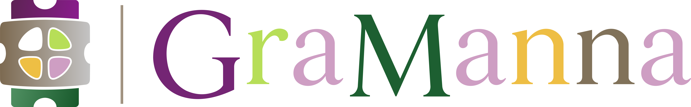

Ovis Alms Foundation
About the Foundation
A desire to help—especially when it comes spontaneously—should be captured and carried forward, not lost in logistics. Ovis Alms Foundation is on a mission to modernize everyday charity by reducing the time, effort, and barriers that can stand between good intentions and real-world needs. We strive to make practical aid simpler to provide, more useful to recipients, and better suited to the realities of daily life. Beyond that, the Foundation aspires to carry the joy and gratitude of recipients directly back to the donors whose contributions made their relief possible, completing the circle of goodwill in every donation.

Our Program
Introducing GraManna
Traditional in-kind giving often requires donors to gather, transport, or deliver physical goods, while recipients may have little choice in what they receive. Our model shifts much of that physical handoff into a digital process by making approved merchant eGift options available through the platform for essentials. Rather than distributing unrestricted cash, GraManna is designed to channel aid toward approved merchants and practical necessities, thereby reducing the likelihood that charitable funds are spent on non-essential uses.
But GraManna is about more than improving how aid is delivered. It is designed to preserve something that is often missing from modern charitable giving: the human experience on both sides. Donors have greater freedom to choose whom they want their contributions to support, while recipients can express gratitude directly to the people whose kindness helped them. In GraManna, giving, receiving, and gratitude become parts of one charitable continuum.
THE CHARITABLE CONTINUUM
How It Works
Giving
Donors make a donation through GraManna and may either select from available requests or let the platform assign their contribution to the next eligible recipient in line.
Receiving
Recipients request aid and, once approved and funded, choose from available merchant eGift options through GraManna.
Gratitude
After receiving aid, recipients express gratitude through GraManna to the donors associated with their support.
A Different Approach
Why GraManna
Not every hardship makes headlines. Many people are not facing a natural disaster or extreme poverty, yet still feel the strain of groceries, household necessities, transportation, and other ordinary expenses—and could benefit from a helping hand from time to time. The platform gives those among us a voice to request aid while offering private citizens a way to assist one another through Ovis Alms Foundation. In an age when our smartphones have made so much of life immediate, interactive, and personal, GraManna brings that same person-to-person experience to charity. The result is a distinctly innovative pathway for people to seek relief and respond to needs that might otherwise go unnoticed—with greater ease and awareness of impact.
Learn More
Have questions about Ovis Alms Foundation, GraManna, or our work? We welcome your interest and would be glad to hear from you.
Contact Us